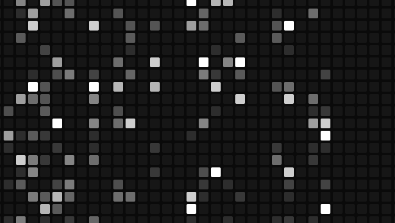
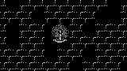

BLACK PAPER 01Perception Chamber
1958 intelligence, inside a 1982 machine, persisting through a 2015 computational substrate.
- On chain
- 17 Sep 2026
- Tokens
- 1
- The program
- 52,104 B
- Written in
- 834 B
- One render
- 566 KB · ~31M gas
THE CHAMBER
A series of Commodore 64 works that live on Ethereum, built one capability at a time. Two machines, 1982 and 2015, both small and completely specified — and one question asked a generation at a time: what separates behaviour that was written from behaviour that was learned?

BLACK PAPER 011958 intelligence, inside a 1982 machine, persisting through a 2015 computational substrate.

BLACK PAPER 00Eight characters, one mechanic each, in a room the chain redraws every time you look.
Each generation isolates a single capability the ones before it deliberately do not have.
A working Commodore 64 lives inside Ethereum. Not a picture of one, and not a file on a server somewhere: minimal64, an emulator nopsta stored in contracts in 2022, where it has been ever since — written for new C64 software rather than the back catalogue, cycle-accurate by design, carrying its own 252-byte Kernal and no BASIC or Character ROM. Anyone can boot it. Nobody has to host it.
Every work here is an ERC-721 token that carries everything it needs. The emulator, the program, the program's state and the page you look at it through are assembled from chain state at the moment you ask for them: no server, no IPFS, no hosted file. Pull the program out of the contract and it runs on real 1982 hardware.
What changes between works is the behaviour running inside. Each generation isolates a single question about behaviour and answers it in the smallest system that can — not a bigger model each time, but a sequence of capability boundaries, each one earned experimentally before the next is attempted.
Sixty-four tokens over one frozen program — but not one behaviour. Eight behaviour systems are distributed across the collection, so the clone Tonys do not all do the same thing; one of the eight appears on a single token.
Each token's wall, bats and candle are fixed traits of that token. The room around them is drawn from the chain at every read: the render folds the previous block's hash into the seed, so the wall's pattern, and where the bats and the candle fall, differ every time the token is viewed. The traits never change. Their arrangement never repeats.
Behaviour here is authored. There is no learner and nothing is trained: the characters do what the program says they do. This is the genesis of the series, and the baseline everything after it is measured against.
0x75FD5A9c4440c38561A0099B216F825b7C6db924 — mainnet, 8 September 2026, locked.
A Tony whose clone has a mind: a one-layer perceptron with 80 inputs, 10 actions and 800 signed weights, held in an 834-byte slot inside the running C64 program.
A person teaches it by hand. Press TRAIN and you take control of the clone; its perceptron goes on predicting what it would have done on its own, and the machine corrects the weights from the difference between that and what you actually did, one lesson at a time. Nothing is trained elsewhere and loaded in.
The weights are on chain, and they change on chain. Each save sends the lessons of a sitting in the order the machine accepted them; the contract replays them itself and records the new mind only if it arrives at the same bytes. Nothing is overwritten — every save adds a new immutable revision and advances the token to it, so a mind keeps its whole ancestry.
That replay is the point of the work: the same learner exists in 6502 machine code and in Solidity, and the two are required to agree byte for byte.
0x6f54E1aAE0E9A679A52e5E733645cB11e0cE6127 — mainnet, 17 September 2026.
This one token is a canary: an engineering sample, deployed on its own ahead of the full collection so that the entire path — deployment, teaching, saving, replay, export — is proven on real mainnet before sixty-four minds depend on it. It is named Perception Chamber Canary on chain, and it is a complete work, not a test that gets thrown away.
Further generations follow, each isolating a single capability the Perception Chamber deliberately does not have. What they are, and what they will be called, will be said when they are real.
Perception Chamber has no consolidation, no episodic or spatial memory, no planning, no intrinsic objectives, no reinforcement learning and no autonomous self-training. Those absences are the series: each one is a later Chamber's question, and adding them early would make it impossible to say which mechanism produced which behaviour.
Four strands this work stands on and does not claim to have originated.
Frank Rosenblatt (1958) described the perceptron and its learning rule — the class of learner the Perception Chamber uses. The perceptron: a probabilistic model for information storage and organization in the brain. Psychological Review 65(6), 386–408. https://doi.org/10.1037/h0042519
John Walker (1987) published BrainSim, a neural network on a Commodore 64: an associative-memory pattern recogniser in fewer than 250 lines of Commodore BASIC, trainable and able to recall noisy patterns. A different mechanism from this learner's supervised rule, and thirty-nine years earlier. https://www.fourmilab.ch/documents/commodore/BrainSim/
Justin D. Harris and Bo Waggoner (2019, Microsoft Research) demonstrated state-changing perceptron updates inside Ethereum transactions, with working open-source Solidity. Research infrastructure rather than an artwork; no tokens were issued. Decentralized & Collaborative AI on Blockchain, arXiv:1907.07247. https://github.com/microsoft/0xDeCA10B
Perceptrons (Fingerprints DAO × Generative, 2023) placed functioning neural-network models and their weights fully on Bitcoin, as collectible artworks — a model living entirely on a public chain, on a different chain from this work and without on-chain training.
The Chamber series uses no code from any of these and makes no claim to first on-chain perceptron training, to first machine learning on a Commodore 64, or to first fully on-chain neural-network artwork.
None of this would exist without nopsta. In 2022 he stored a working Commodore 64 — the emulator minimal64 — inside Ethereum contracts, and in doing so made it possible to treat a C64 runtime itself as reusable on-chain infrastructure. Every Chamber boots from those contracts, read in place, exactly where he left them.
He has since passed away. The Chamber series was created independently afterward, as an exploration of—and tribute to—the open computational infrastructure he left for others to use.
Tony: Born for Adventure — game code Maciej Małecki, graphics Rafał Dudek, music Sami Juntunen. MIT. https://github.com/maciejmalecki/tony-demo
minimal64 — the C64 emulator, by nopsta. GPL-2.0. https://github.com/nopsta/minimal64
Character set — the OpenROMs character ROM, LGPL-3.0-or-later. https://github.com/MEGA65/open-roms
The Chamber series, its learner, its contracts and its pages are by CypherDAO, 2026, and are released under the MIT licence. See LICENSE.